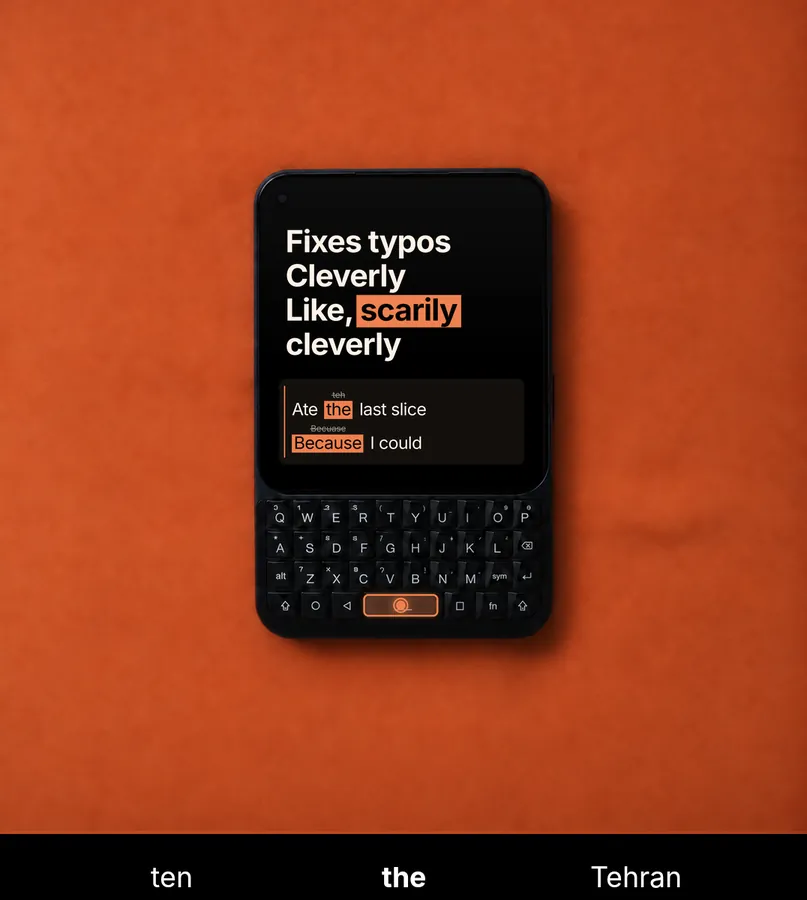

Swipe words right on the keys
Slide across a word's letters on the physical keys, then lift. Press short words, swipe long ones, in the same sentence. One thumb is plenty, so one-handed typing just works.
TitanKeys 3.0
A keyboard for the phone with the keyboard. Swipe whole words on the same keys you press, get typos fixed as you go, and type in 49 languages.
Slide across a word's letters on the physical keys, then lift. Press short words, swipe long ones, in the same sentence. One thumb is plenty, so one-handed typing just works.

Press Space and the typo you just made is gone. It picks the fix that fits your sentence, and nobody saw.

Tap Space twice, keep the second tap down, and slide to move the cursor. Tap it three times to grab words. No more poking the screen.

Hold a key for the symbol printed on it, or open Sym for all of them, emoji included.

49 of them, each in its own words, up to four at once. Hold Sym to switch.
The guide sets it up the first time you open it. Nearly every behaviour has its own switch in Settings.